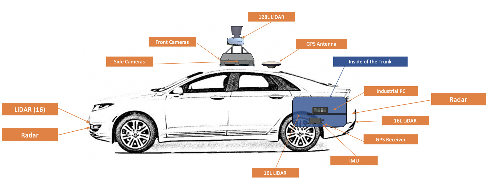

Apollo Auto - Architekturdokumentation
1. Einführung und Ziele
Dieser Abschnitt führt in die Aufgabenstellung ein und skizziert die Ziele, die Apollo Auto verfolgt.
1.1. Aufgabenstellung
1.1.1. Was ist Apollo Auto?
Apollo ist eine hochleistungsfähige, flexible Architektur, die die Entwicklung, das Testen und den Einsatz von autonomen Fahrzeugen beschleunigt. Apollo Auto bietet unter Andrem Lösungen für Valet Parking, V2X-Kommunikation und intelligente Lichtsignalanlagen.
1.1.2. Wesentliche Features:
-
Valet Parking
-
Software- und Hardware-Integrationslösung. Multifusionslösung bestand aus Fahrzeug, Cloud, HD-Karte und Parkplätzen
-
Bietet hochwertige Dienstleistungen, wie automatische Parkplatzerkennung und autonomes Parken, für Kunden.
-
-
V2X-Kommunikation
-
Interaktionslösung für intelligente Fahrzeuginfrastruktur
-
Apollo V2X umfasst ein intelligentes Transportsystem für Fahrzeug Straßendatenerfassung und intelligente Verarbeitungsanalyse, Verkehrssicherheit und -effizienz
-
Wahrnehmung aller Verkehrsteilnehmer im Sichtfeld und die bereitgestellten straßenseitigen Sensorinformationen können für die Entscheidungsfindung beim autonomen Fahren auf hohem Niveau verwendet werden
-
Wahrnehmung von Verkehrteilnehmern ausserhalb des Sichtfeldes
-
-
Bietet einen vollständigen, kontinuierlichen, multimodalen Datendienst mit niedriger Latenz für L4-Autopilot-Fahrzeuge, die in mehreren Szenarien getestet wurden
-
Durch die permanente dynamische Erfassung von Verkehrsinformationen und die Cloud-Integration, wird eine weltweite optimale kollaborative Steuerungsfunktionen für Verkehrsteilnehmer und Verkehrsmanagement erreicht
-
Smart Traffic Signals
-
-
Holographisches Wahrnehmen und Verstehen, basierend auf dem holografischen Wahrnehmungs- und Erkennungssystem
-
Status von Fußgängern und Fahrzeugen auf jeder Fahrspur genau erkennen und die Leistung des aktuellen Verkehrsflusses wie Volumen, Warteschlangenlänge, Verspätungen usw.
-
Vollständige raum-zeitliche Ableitung und Entscheidungsfindung
-
Echtzeitsteuerung der gesamten Szene
-
Reduzierung der durchschnittlichen Wartezeit um 20-30% während der Rush Hour
-
Robotaxi
-
-
Die Robotaxis, die aus Chinas erstem werkseitig installierten L4-Passagier-Fahrzeug sind zur Zeit auf öffentlichen Straßen im Testbetrieb
-
Sie werden in Kooperation von Baido und FAW an einer gemeinsamen Produktionsline hergstellt
-
Minibus
-
-
Die Minibusse ermöglichen ebenfalls autonomes Fahren der Stufe 4
-
Funktionen sind unter Anderem Hinderniserkennung und -vermeidung, zu einem Zielort Fahren und Kreuzungen überqueren
1.2. Qualitätsziele
Die folgende Tabelle beschreibt die zentralen Qualitätsziele von DokChess, wobei die Reihenfolge eine grobe Orientierung bezüglich der Wichtigkeit vorgibt.
| Qualitätsziel | Motivation und Erläuterung |
|---|---|
Zugängliches Beispiel (Analysierbarkeit) |
Apollo Auto ist eine offene Plattform, daher ist es wichtig, dass sich neue Entwickler möglichst schnell in die Architektur, Entwurf und Implementierung einarbeiten können. |
Schnelle Reaktion auf Fahrsituationen (Zeitverhalten) |
Apollo Auto übernimmt zuverlässig und sicher die autonome Steuerung von Fahrzeugen. |
Interoperabilität |
Um die Fahrsicherheit weiter zu erhöhen, werden große Mengen an Sensor- und Zustandsdaten gesammelt, mit denen das Fahrzeug schnell auf Veränderungen reagieren kann. |
1.3. Stakeholder
Die folgende Tabelle stellt die Stakeholder von Apollo Auto und ihre jeweilige Intention dar.
| Rolle | Interesse, Bezug |
|---|---|
Softwarearchitekten |
Wollen ein Gefühl bekommen, wie Architekturdokumentation für ein konkretes System aussehen kann. Möchten sich Dinge (z.B. Form, Notation) für Ihre tägliche Arbeit abgucken. Gewinnen Sicherheit für Ihre eigenen Projekte. |
Entwickler |
Nehmen Architekturaufgaben im Team wahr. Brauchen ein generelles Verständnis für die Architektur. |
OEM & Lieferanten |
Entwickeln neue Produkte auf Grundlage von Apollo Auto. Wollen Anregungen für eigene Produkte finden. |
Gesetzgeber & Genehmigungsbehörden |
Entwickeln einen gesetzlichen Rahmen zur Zulassung von fahrerlosen Fahrzeugen im öffentlichen Straßenverkehr. Etablieren Prüfvorschriften und Tests für Genehmigungsverfahren. |
Universitäten |
Entwickeln eigene Forschungsprojekte auf Grundlage von Apollo Auto. Wollen Anregungen für weitere Forschungsprojekte und studentische Arbeiten finden. |
Studenten |
Interessieren sich aufgrund ihres Studiums für die verschiedenen Aspekte einer Architekturdokumentation. Setzen eigene Projekte (z.B. Masterarbeit) zum Thema autonomes Fahren mit Apollo Auto um. Schreiben eine Architekturdokumentation zu Apollo Auto. |
2. Randbedingungen
Beim Einsatz von Apollo sind verschiedene Randbedingungen zu beachten. Dieser Abschnitt stellt sie dar und erklärt auch – wo nötig – deren Motivation.
2.1. Technische Randbedingungen
-
Für den Einsatz von Apollo Auto wird eine anspruchsvolle Hardwareausstattung benötigt. Eine Umsetzung mit einem marktüblichen Standard-Notebook allein ist nicht möglich.
-
Es wird ein Fahrzeug benötigt, dass mit By-Wire-Systemen ausgestattet ist, zum Beispiel Brake-by-Wire, Steering-by-Wire, Throttle-by-Wire oder Shift-by-Wire (Apollo wird derzeit auf Lincoln MKZ getestet).
-
Ein Rechner mit einem 4-Kern-Prozessor und mindestens 8 GB Speicher (16 GB für Apollo 3.5 und höher)
-
Ubuntu 18.04
-
Zusätzlich wird eine umfangreiche Sensorik benötigt die Bild- und Abstandsinformationen aus dem Umfeld aufnehmen
-
Arbeitskenntnisse über Docker
2.2. Organisatorische Randbedingungen
| Randbedingung | Erläuterungen, Hintergrund |
|---|---|
github |
Quellcode ist über github verfügbar. |
Bereitstellung von Daten |
Alle Daten müssen in einem Format hochgeladen werden, das den Apollo-Datenspezifikationen entspricht. |
Speicherung von Daten |
Daten, die in China gesammelt wurden, dürfen nur auf Servern in China gespeichert werden. Daten, die in anderen Ländern und Regionen erhoben werden, unterliegen den Beschränkungen der Datenspeicherung, die durch die Gesetze der jeweiligen Länder festgelegt sind. |
Bereitstellung von Daten |
Als Initiator dieser Plattform stellt Baidu die Ausgangsdaten für diese Plattform bereit. Die Daten stehen allen Partnern dieser Plattform offen. Das Prinzip der fairen Daten stellt sicher, dass Partner mit größeren eigenen Beiträgen mehr Daten und Dienste von dieser Plattform erhalten. |
Datenschutz |
Jeder Partner kann seine eigenen Daten anzeigen und die Datenschutzeigenschaften der Daten als privat oder öffentlich festlegen. Die von Partnern hochgeladenen Daten gelten standardmäßig als privat. |
Endscheidungsführung |
Grundsätzlich handelt es sich bei Apollo Auto um eine offene Plattform. Allerdings wirde Baidu um die architektonische Integrität, die Systemzuverlässigkeit und die schnelle Entwicklung von Apollo zu gewährleisten, bei Bedarf wichtige Entscheidungen treffen, während die aktive Beteiligung der breiteren Gemeinschaft erhalten bleibt. |
2.3. Konventionen
| Konvention | Erläuterungen, Hintergrund |
|---|---|
Dokumentation |
Terminologie und Gliederung nach dem deutschen arc42-Template in der Version 6.0 |
Spezifische Datenformate und Frameworks für autonomes Fahren |
Verwendung etablierter Standards für autonomes Fahren. zum Beispiel sind alle Softwaremodule als ROS(Robot Operating System)-Knoten zu behandeln. |
3. Kontextabgrenzung
Dieser Abschnitt beschreibt das Umfeld von Apollo Auto. Für welche Benutzer ist es da, und mit welchen Fremdsystemen interagiert es?
3.1. Fachlicher Kontext
3.1.1. Open Vehicle Certification Platform
Die Open Vehicle Certification Platform schlug eine standardisierte Schnittstelle zwischen dem Autonomen Fahrsystem und dem Fahrzeug vor. Durch diese Plattform können die Fahrzeuganbieter das Fahrzeug einfach mit der offenen Plattform von Apollo verbinden, mehr Entwickler für autonomes Fahren abdecken und die Entwicklung beschleunigen.
3.1.2. Hardware Development Platform
Unter der Hardware Development Platform werden einige durch Apollo Auto unterstütze Hardwarekomponenten zusammengefasst.
Diese sind beispielsweise Sensoren wie Kamera und Lidar sowie Rechen- und Adaptersysteme.
3.1.3. Open Software Platform
Die Open Software Platform fasst alle Softwaremodule zusammen, die von Apollo Auto verwendet werden, um ein autonomes Fahren zu ermöglichen.
Hierzu zählen beispielsweise Module zur Routenplanung, Vorhersage und Wahrneh
3.1.4. Cloud Service Platform
Die Cloud Service Platform fasst ergänzende cloud-basierte Module zusammen die von Apollo Auto verwendet werden.
Hierzu zählen beispielsweise Security, V2X und OTA.
3.1.5. Solutions
Solutions behinhaltet diverse Szenarien für das automatisierte Fahren.
3.2. Technischer Kontext

| Name | Verantwortung |
|---|---|
IPC |
Industrial PC |
AXU |
Die Apollo Extension Unit (AXU) wurde entwickelt, um die Rechenleistung zu erhöhen und die Speicherkapazität zu erweitern, indem Entwickler zusätzliche Beschleuniger wie GPU, FPGA-Module usw. einstecken können. |
ASU |
Die Apollo Sensor Unit (ASU) bietet Sensorschnittstellen, um Daten von verschiedenen Sensoren zu sammeln, einschließlich Kameras, Radar und Ultraschallsensoren. Das System nutzt auch Puls-pro-Sekunde- (PPS) und GPRMC-Signale von GNSS-Empfängern, um die Synchronisation für die Kamera- und LiDAR-Sensoren zu ermöglichen. |
Sensors |
Verschiedene Sensoren die von Apollo Auto verwendet werden (Radar, Ultraschall, Lidar, Kameras, Chassis-Daten) |
4. Lösungsstrategie
Dieser Abschnitt enthält einen stark verdichteten Architekturüberblick. Eine Gegenüberstellung der wichtigsten Ziele und Lösungsansätze.
| Qualitätsziel | Dem zuträgliche Ansätze in der Architektur |
|---|---|
Zugängliches Beispiel (Analysierbarkeit) |
Architekturüberblick gegliedert nach arc42, Explizites, modul- und plattformbasiertes Domänenmodell, Ausführliche Dokumentation der öffentlichen Schnittstellen in doxygen |
Schnelle Reaktion auf Fahrsituationen (Zeitverhalten) |
Apollo Extension Unit (AXU) zur Unterstützung der IPC bei Berechnungen, Cyber RT als Runtime Framework |
Interoperabilität |
Apollo Sensor Unit (ASU) als Sensorschnittstellen, um Daten von verschiedenen Sensoren zu sammeln und Sensordaten aggregiert für Module bereitzustellen |
irgendwas zu interoperabilität weil versch. sensoren etc verwendet werden können
CYber RT → Ros BUS Kommunikation …
5. Bausteinsicht
Dieser Abschnitt beschreibt die Zerlegung von Apollo Auto in Module.
5.1. Whitebox Gesamtsystem
Apollo Auto zerfällt wie in Bild unten dargestellt in mehrere Subsysteme.

- Enthaltene Bausteine
| Name | Verantwortung |
|---|---|
Guardian |
Ein Sicherheitsmodul, das die Funktion eines Aktionszentrums übernimmt und eingreift, wenn Monitor einen Fehler erkennt. |
Monitor |
Das Überwachungssystem aller Module im Fahrzeug inklusive Hardware. |
HMI/Dreamview |
Human Machine Interface oder DreamView in Apollo ist ein Modul zur Anzeige des Fahrzeugstatus, zum Testen anderer Module und zur Steuerung der Funktion des Fahrzeugs in Echtzeit. |
CANBus |
Der CanBus ist die Schnittstelle, die Steuerbefehle an die Fahrzeughardware weitergibt. Außerdem gibt er die Fahrwerksinformationen an das Softwaresystem weiter. |
Control |
Das Control-Modul führt die geplante räumlich-zeitliche Trajektorie aus, indem es Steuerbefehle wie Gas, Bremse und Lenkung erzeugt. |
Planning |
Das Planning-Modul plant die räumlich-zeitliche Trajektorie, die das autonome Fahrzeug fahren soll. |
Routing |
Das Routing Modul sagt dem autonomen Fahrzeug, wie es sein Ziel über eine Reihe von Fahrspuren oder Straßen erreichen kann. |
Localization |
Das Localization-Modul nutzt verschiedene Informationsquellen wie GPS, LiDAR und IMU, um zu schätzen, wo sich das autonome Fahrzeug befindet. |
Prediction |
Das Prediction-Modul antizipiert die zukünftigen Bewegungstrajektorien der wahrgenommenen Hindernisse. |
Perception |
Das Perception-Modul identifiziert die Welt, die das autonome Fahrzeug umgibt. Innerhalb Perception gibt es zwei wichtige Teilmodule: Hinderniserkennung und Ampelerkennung. |
HD-Map |
Dieses Modul ist ähnlich wie eine Bibliothek. Anstatt Nachrichten zu veröffentlichen und zu abonnieren, fungiert es häufig als Abfrageunterstützung, um ad-hoc strukturierte Informationen zu den Straßen bereitzustellen. |
5.2. Guardian
5.2.1. Zweck/Verantwortung
Ein Sicherheitsmodul, dass die Funktion eines "Action Centers" übernimmt und eingreift, wenn das Modul Monitor einen Fehler erkennt.
5.2.2. Schnittstelle(n)
TBD
5.2.3. Qualitäts-/Leistungsmerkmale
-
Alle Module funktionieren einwandfrei - Guardian lässt den Steuerfluss normal funktionieren. Steuersignale werden an den CANBus gesendet, als ob Guardian nicht vorhanden wäre.
-
Wenn ein Fehler von Monitor erkannt wird, verhindert Guardian, dass Steuersignale den CANBus erreichen und bringt das Auto zum Stillstand. Es gibt 3 Möglichkeiten, wie Guardian entscheidet, wie das Fahrzeug anzuhalten ist. Dazu verwendet Guardian die Ultraschallsensoren
-
Wenn der Ultraschallsensor einwandfrei funktioniert, ohne ein Hindernis zu erkennen, bringt Guardian das Auto langsam zum Stehen
-
Reagieren die Ultraschallsensoren nicht, bremst Guardian hart ab, um das Auto sofort zum Stillstand zu bringen.
-
Ein Sonderfall liegt vor, wenn das HMI den Fahrer über einen drohenden Unfall informiert und der Fahrer 10 Sekunden lang nicht eingreift, führt Guardian eine Vollbremsung durch, um das Fahrzeug sofort zum Stehen zu bringen.
-
5.2.4. Ablageort/Datei(en)
5.3. Monitor
5.3.1. Zweck/Verantwortung
Das Überwachungssystem für alle Module im Fahrzeug einschließlich der Hardware. Monitor empfängt Daten von verschiedenen Modulen und leitet sie an die HMI weiter, damit der Fahrer sie sehen und sicherstellen kann, dass alle Module ohne Probleme funktionieren. Im Falle eines Modul- oder Hardwarefehlers sendet Monitor eine Warnung an Guardian, das dann entscheidet, welche Maßnahmen ergriffen werden müssen, um einen Unfall zu verhindern.
5.3.2. Schnittstelle(n)
TBD
5.3.3. Qualitäts-/Leistungsmerkmale
Dieses Modul enthält Software auf Systemebene, wie z. B. Code zur Überprüfung des Hardwarestatus und zur Überwachung des Systemzustands. In Apollo 5.5 führt das Monitor-Modul nun u. a. die folgenden Prüfungen durch:
-
Status der laufenden Module
-
Überwachung der Datenintegrität
-
Überwachung der Datenfrequenz
-
Überwachung des Systemzustands (z. B. CPU-, Speicher-, Festplattennutzung usw.)
-
Erzeugen eines End-to-End-Latenz-Statistikberichts
5.3.4. Ablageort/Datei(en)
5.4. HMI/Dreamview
5.4.1. Zweck/Verantwortung
Human Machine Interface oder DreamView in Apollo ist eine Web-Anwendung, die: - die aktuelle Ausgabe relevanter autonomer Fahrmodule visualisiert, z. B. Planung der Trajektorie, Fahrzeuglokalisierung, Fahrwerkstatus usw. - eine Mensch-Maschine-Schnittstelle bietet, über die der Benutzer den Hardwarestatus einsehen, Module ein- und ausschalten und das autonom fahrende Auto starten kann. - bietet Debugging-Tools, wie z. B. PnC-Monitor, zur effizienten Verfolgung von Modulproblemen.
5.4.2. Schnittstelle(n)
TBD
5.4.3. Qualitäts-/Leistungsmerkmale
5.4.4. Ablageort/Datei(en)
5.5. CANBus
5.5.1. Zweck/Verantwortung
Der CanBus ist die Schnittstelle, die Steuerbefehle an die Fahrzeughardware weitergibt. Außerdem gibt er die Fahrwerksinformationen an das Softwaresystem weiter.
5.5.2. Schnittstelle(n)
5.5.3. Ablageort/Datei(en)
5.6. Control
5.6.1. Zweck/Verantwortung
Das Control-Modul nimmt die geplante Trajektorie als Eingabe und generiert den Steuerbefehl zur Weitergabe an den CANBus.
5.6.2. Schnittstelle(n)
5.6.3. Ablageort/Datei(en)
5.7. Planning
5.7.1. Zweck/Verantwortung
Apollo 3.5 verwendet mehrere Informationsquellen, um eine sichere und kollisionsfreie Trajektorie zu planen, daher interagiert das Planning-Modul mit fast jedem anderen Modul.
Zunächst nimmt das Planning-Modul die Vorhersageausgabe. Da die Vorhersageausgabe das ursprünglich wahrgenommene Hindernis umschließt, abonniert das Planning-Modul die Ausgabe der Ampelerkennung und nicht die Ausgabe der wahrgenommenen Hindernisse.
Dann nimmt das Planning-Modul die Routing-Ausgabe. In bestimmten Szenarien kann das Planning-Modul auch eine neue Routing-Berechnung auslösen, indem es eine Routing-Anforderung sendet, wenn der aktuellen Route nicht treu gefolgt werden kann.
Schließlich muss das Planning-Modul den Standort (Lokalisierung: wo bin ich) sowie die aktuellen autonomen Fahrzeuginformationen (Fahrwerk: wie ist mein Status) kennen.
5.7.2. Schnittstelle(n)
TBD
5.7.3. Ablageort/Datei(en)
5.8. Routing
5.8.1. Zweck/Verantwortung
Das Routing-Modul muss den Start- und Endpunkt des Routings kennen, um die Durchfahrtsspuren und Straßen zu berechnen. Normalerweise ist der Startpunkt der Standort des autonomen Fahrzeugs. Die RoutingResponse wird wie unten gezeigt berechnet und veröffentlicht.
5.8.2. Schnittstelle(n)
TBD
5.8.3. Ablageort/Datei(en)
5.9. Localization
5.9.1. Zweck/Verantwortung
Das Localization-Modul aggregiert verschiedene Daten, um das autonome Fahrzeug zu lokalisieren. Es gibt zwei Arten von Lokalisierungsmodi: OnTimer und Multiple SensorFusion.
Die erste Lokalisierungsmethode ist RTK-basiert, mit einer Timer-basierten Callback-Funktion OnTimer.
Die andere Lokalisierungsmethode ist die Multiple Sensor Fusion (MSF)-Methode, bei der eine Reihe von ereignisgesteuerten Callback-Funktionen registriert werden.
5.9.2. Schnittstelle(n)
5.9.3. Qualitäts-/Leistungsmerkmale
5.9.4. Ablageort/Datei(en)
5.10. Prediction
5.10.1. Zweck/Verantwortung
Das Prediction-Modul schätzt die zukünftigen Bewegungstrajektorien für alle wahrgenommenen Hindernisse. Die ausgegebene Vorhersagemeldung beinhaltet die Informationen zur Hinderniserkennung. Prediction abonniert Lokalisierungs-, Planungs- und Wahrnehmungs-Hindernis-Nachrichten wie unten dargestellt. Wenn ein Lokalisierungsupdate empfangen wird, aktualisiert das Prediction-Modul seinen internen Status. Die eigentliche Vorhersage wird ausgelöst, wenn Perception ihre Perception-Hindernismeldung aussendet.
5.10.2. Schnittstelle(n)
5.10.3. Ablageort/Datei(en)
5.11. Perception
5.11.1. Zweck/Verantwortung
Das Perception-Modul verfügt über die Fähigkeit, 5 Kameras (2 vorne, 2 seitlich und 1 hinten) und 2 Radare (vorne und hinten) zusammen mit 3 16-Linien-LiDARs (2 hinten und 1 vorne) und 1 128-Linien-LiDAR zu verwenden, um Hindernisse zu erkennen und ihre individuellen Spuren zu einer endgültigen Spurliste zu verschmelzen. Das Hindernis-Submodul erkennt, klassifiziert und verfolgt Hindernisse. Dieses Teilmodul sagt auch die Bewegung und Positionsinformationen des Hindernisses voraus (z. B. Richtung und Geschwindigkeit). Für die Fahrspur werden Fahrspurinstanzen durch Nachbearbeitung von Fahrspur-Parsing-Pixeln konstruiert und die relative Position der Fahrspur zum Ego-Fahrzeug berechnet (L0, L1, R0, R1, usw.).
5.11.2. Schnittstelle(n)

5.11.3. Ablageort/Datei(en)
6. Laufzeitsicht
Mit Apollo Auto kommunizieren die Modulbausteine über Apollo Cyber RT und protobuf Nachrichten. Aus diesert dezentralen Architektur ist es schwierig die Laufzeitsicht einzelner Komponenten explizit darzustellen.
7. Verteilungssicht
7.1. Infrastruktur Ebene 1

- Begründung
-
<Erläuternder Text>
- Qualitäts- und/oder Leistungsmerkmale
-
<Erläuternder Text>
- Zuordnung von Bausteinen zu Infrastruktur
-
<Beschreibung der Zuordnung>
7.2. Infrastruktur Ebene 2
Die nachfolgende Abbildung zeigt die Verteilung der einzelnen Hardwarekomponenten wie sie in Apollo Auto verwendet werden.

8. Querschnittliche Konzepte
Dieser Abschnitt beschreibt allgemeine Strukturen und Aspekte, die systemweit gelten. Darüber hinaus stellt er verschiedene technische Lösungskonzepte vor.
8.1. Fachliche Konzepte
8.1.1. Common
Das Common-Modul dient als sogenannte "shared library", und enthält Code der von allen Modulen innerhalb von Apollo Auto gleichermaßen verwendet wird.
8.1.2. Guardian
Das Guardian-Modul dient als letzte Sicherungsinstanz / Gatekeeper um bei gefährlichen Situationen das Fahrzeug in einen sicheren Zustand zu überführen.
8.1.3. Drivers
Das Drivers-Modul enthält Treiber für verschiedene Sensoren, wie beispielsweise LIDAR- oder Kamerasysteme
8.2. Unter-der-Haube
8.2.1. Apollo Auto protobuf
Die Dynamik von autonomen Fahrzeugen (AV) wird von der Planungs-Engine über den Controller Area Network-Bus (CAN-Bus) gesteuert. Die Software liest Daten aus Hardware-Registern und schreibt sie zurück, genau wie wir es in Assembler tun würden. Für hochpräzise Berechnungen arbeiten die Lokalisierungs-, Wahrnehmungs- und Planungsmodule als unabhängige Eingabequellen, während die Ausgabequellen über das Peer2Peer (P2P)-Protokoll zusammenarbeiten. P2P wird durch die RPC-Netzwerkanwendung unterstützt.
Apollo Auto verwendet ROS1 als zugrunde liegendes Netzwerk, was bedeutet, dass Apollo Auto das Master-Nodes-Framework von ROS1 entlehnt. Da xmlRPC von ROS1 wirklich alt ist (im Vergleich zu den neueren brpc und grpc), hat Baidu seine eigene protobuf-Version von RPC entwickelt.
8.2.2. Cyber RT
Apollo Cyber RT ein Open-Source-Laufzeit-Framework, das speziell für autonome Fahrszenarien entwickelt wurde. Es basiert auf einem zentralisierten Berechnungsmodell und ist hochgradig auf Leistung, Latenz und Datendurchsatz optimiert.
9. Entwurfsentscheidungen
TBD
10. Qualitätsanforderungen
Dieser Abschnitt beinhaltet konkrete Qualitätsszenarien, welche die zentralen Qualitätsziele, aber auch andere geforderte Qualitätseigenschaften besser fassen. Sie ermöglichen es, Entscheidungsoptionen zu bewerten.
10.1. Qualitätsbaum
Das folgende Bild gibt einen Überblick über die relevanten Qualitätsmerkmale und den ihnen jeweils zugeordneten Szenarien.
10.2. Qualitätsszenarien
| Nr. | Szenario |
|---|---|
1 |
Ein Interessierter mit Grundkenntnissen in autonomen Fahren und UML möchte einen Einstieg indie Architektur von Apollo Auto finden. Lösungsstrategie und Entwurf erschließen sich ihm innerhalb von einem Tag. |
2 |
Ein Architekt, der arc42 anwenden möchte, sucht zu einem beliebigen Kapitel des Templates einen konkreten Beispielinhalt und findet ihn unverzüglich in der Dokumentation. |
3 |
Ein erfahrener Entwickler sucht die Implementierung eines im Entwurf beschriebenen Moduls. Er findet sie ohne Umwege oder fremde Hilfe im Quelltext. |
4 |
Ein Fahrzeugführer wird vom Ausgangspunkt, ohne implausible Umwege zu seiner Zieldestination gefahren. |
5 |
Das Fahtzeug identifiziert Hindernisse zuverlässig und weicht Ihnen aus. In keinem Fall kommt es bei einem stehenden Hindernis zu einer Kollision. |
6 |
Fahrentscheidungen können in jedem Betriebszustand innerhalb von 100 ms getroffen werden |
7 |
Beim Ausfall einiger Teilsysteme wird immer ein sicherer Zustand erreicht. |
8 |
Im Falle eines Hackerangriffes wird dieser zuverlässig erkannt und hat keinen Einfluss auf das Fahrverhalten. |
9 |
Nach der Produktion und in Betriebnahme eines Fahrzeuges müssen alle zusätzlichen Funktionen über Over-the-air-Updates integrierbar sein, ohne die Hardware anpassen zu müssen. |
11. Risiken
Die folgenden Risiken wurden zu Beginn des Vorhabens identifiziert. Sie beeinflussten die Planung der ersten drei Iterationen maßgeblich. Seit Abschluss der dritten Iteration werden sie beherrscht. Dieser Architekturüberblick zeigt die Risiken inklusive der damaligen Eventualfallplanung weiterhin, wegen ihres großen Einflusses auf die Lösung.
11.1. Angriffe von Außen
Da Moderne autonome Fahrzeuge über By-Wire Systeme verfügen und zukünftig keine mechanischen Eingriffmöglichkeiten mehr bieten werden, sind Sie besonders anfällig für Hackerangriffe, zum Beispiel zum Tötungszweck.
Folgend einige Beispiele für mögliche Angriffe auf Autonome Fahrzeuge:
-
Hacking
-
Eingriffe über Hardware Schnittstellen
-
Entfernte Angriffe über die Cloudanbindung
-
-
Beeinträchtigung des GNSS (global navigation satellite system)
-
Jamming
-
Spoofing
-
-
Visuelle Eingriffe
-
Manipulation von Lichtsignalanlagen
-
Veränderung von Verkehrszeichen
-
Veränderung von Leitlinien oder Fahrbahnbegrenzungen
-
-
Eingriffe in die Datenübertragung
-
Signalabschirmung
-
Fälschung von Verkehrsdaten über V2X oder Internet
-
Hacking: Sowohl über Hardware Schnittstellen zur Diagnose und Wartung, als auch über die Schnittstelle zum Internet, für Over-the-Air-Updates und Datenaustausch), kann Schadsoftware in das Netzwerk gelangen. Dabei kann es sich zum Einen um Spyware zum Ausspähen vertraulicher z.B. personenbezogener Daten, wie zum Beispiel den genauen Standort handeln. Zum Anderen kann Maleware benutzt werden, um das Fahrzeug funktionsunfähig zu machen, oder einen mitunter tödlichen Unfall zu verursachen.
Beeinträchtigung GNSS: Die Positionsbestimmung mit GNSS basiert auf dem Empfang von Positionsdaten über Elektromagnetische Wellen. Dieser Übertragungsweg eröffnet einige mögliche Angriffswege, wie Jamming und Spoofing. Beim Jamming wird das GNSS-Signal mittels Interferenz(Überlagerung der Signalwellen) gestört. Damit kann das Fahrzeug seine aktuelle Position nicht mehr bestimmen. Bei einem Spoofing-Angriff werden dem Fahrzeug gefälschte Positionsdaten gesendet. Damit kann das Fahrzeug fehlgeleitet werden.
Visuelle Eingriffe: Die Steuerung von autonomen Fahrzeugen beruht zum größten Teil auf Sensordaten. Diese können gezielt visuell manipuliert werden. Zum Beispiel ist es möglich Lichtanlagen zu manipulieren, um Fahrzeuge an Kreuzungen in den kreuzenden Verkehr fahren zu lassen. Außerdem können Verkehrszeichen abgeändert werden, um zum Beispiel Geschwindigkeiten stark zu überhöhen (z.B. 130km/h anstatt 30km/h). Fahrtrajektorien werden unter Anderem aufgrund der Fahrbahnbegrenzung ermittelt. Diese kann sehr einfach mechanisch manipuliert werden. Test haben ergeben, dass generell, aber im Besonderen auch im Bereich von Baustellen die Fahrspurerkennung Fehler- und Manipulationsanfällig ist.
Eingriffe in die Datenübertragung: Wie beim GNSS können generell Störsender benutzt werden, um die Datenübertragung zum autonomen Fahrzeug zu unterbrechen. Dann fährt das Fahrzeug ohne externe Verkehrsinformationen und kann ausschließlich auf der Grundlage der eigenen Sensorinformationen navigieren. Außerdem können auch hier wieder Fehlinformationen gesendet werden, um zum Beispiel unnötige riskante Ausweichmanöver auszulösen.
Um zu verhindern, dass in Fahrzeuge mit Apollo Auto von außen eingegriffen wird, bietet Apollo Auto einige Sicherheitsfunktionen.
Cyber Security Produkte:
-
Secure IVI:
Ein Produkt, das das IVI-System sichert. Es kann die Legitimität von Anwendungen überwachen, unbefugte Softwareinstallationen verhindern und verdächtige Verbindungen und Portzugriffe filtern. Es schützt auch die Privatsphäre der Benutzer und das IVI-Urheberrecht.
-
IDPS（Intrusion Detection and Prevention System）
Ein Sicherheitsprodukt zur Identifizierung anormaler Daten und Verhaltensweisen im Fahrzeug, um zu verhindern, dass sie sich auf das gesamte Fahrzeugnetzwerk ausbreiten. Durch die Kombination mehrerer Erkennungs-Engines kann es die Anomalie im Fahrzeug vollständig erkennen.
-
CANScan
Ein Produkt für den Sicherheitstest von CAN und Steuergeräten. Mit einer umfangreichen Testfallbibliothek kann es Sicherheitstestanalysen auf verschiedenen Steuergeräten durchführen und Schwachstellen schnell ausfindig machen.
Zusammenfassend kann festgehalten werden, dass die Sicherheitsrisiken bei autonomen Fahrzeugen enorm sind. Apollo Auto bietet erste Funktionen die für eine erhöhte Cybersecurity sorgen. Besonders gegen komplexe Angriffe mit mehreren kombinierten Verfahren müssen die Sicherheitslösungen aber noch weiterentwickelt werden.
12. Glossar
Das folgende Glossar erklärt Begriffe aus dem Bereich Autonomes Fahren.
| Begriff | Definition |
|---|---|
By-Wire |
Bezeichnung für (zumindest partielles) Fahren oder Steuern von Fahrzeugen ohne mechanische Kraftübertragung der Bedienelemente zu den entsprechenden Stellelementen wie etwa Drosselklappen. Das By-Wire-Konzept umfasst dabei zumindest zwei oder mehr der „X-by-Wire“- Systeme wie etwa Brake-by-Wire (Bremssteuerung) und Steer-by-Wire (Lenkung).. |
Fahrtrajektorie |
Die Fahrtrajektorie ist die Bahn, die ein Fahrzeug voraussichtlich Fahren wird. |
GNSS |
Bezeichnet das globale Navigationssatelliten System (engl. global navigation satellite system). GNSS wird zur Positionsbestimmung und Navigation auf der Erde und in der Luft durch den Empfang der Signale von Navigationssatelliten und Pseudoliten. |
LIDAR |
ist eine dem Radar verwandte Methode zur optischen Abstands- und Geschwindigkeitsmessung sowie zur Fernmessung. Statt der Radiowellen wie beim Radar werden Laserstrahlen verwendet. |
RADAR |
ist die Bezeichnung für verschiedene Erkennungs- und Ortungsverfahren und -geräte auf der Basis elektromagnetischer Wellen im Radiofrequenzbereich (Funkwellen). |
P2P |
Peer-to-Peer und Rechner-Rechner-Verbindung sind synonyme Bezeichnungen für eine Kommunikation unter Gleichen, hier bezogen auf ein Rechnernetz. |
RPC |
Remote Procedure Call ist eine Technik zur Realisierung von Interprozesskommunikation. Sie ermöglicht den Aufruf von Funktionen in anderen Adressräumen. Im Normalfall werden die aufgerufenen Funktionen auf einem anderen Computer als das aufrufende Programm ausgeführt. |
13. Anhang
13.1. Apollo
Die Dokumentation von Appollo Auto ist anfangs schwer nachzuvollziehen. Teilweise ist die Dokumentation von Subsystemen oder Konzepten tief in der Projektstruktur "verborgen" und wird nur beim systematischen Durchsuchen gefunden. Die allgemein zur Verfügung stehende Dokumentation ist zwar ausreichend um die rudimentären Konzepte hinter Apollo Auto zu verstehen, wünschenswert wäre allerdings eine
13.2. Arc42
Die Dokumentation muss bereits zu Beginn der Arbeiten an der Architektur/am Quellcode erfolgen um stets den aktuellen Stand abbilden zu können, damit die Dokumentation mit dem Projekt wachsen kann. Die nachträgliche Dokumentation ist eine Sysiphusarbeit und kann nicht gewährleisten das alle Aspekte im Nachhinein korrekt wiedergegeben werden.
Beispielsweise sind Diagramme in der Laufzeitsicht effizienter zu gestalten während ein Modul im Entstehen ist. Änderungen können mit jeder Entwicklungsstufe eingepflegt werden. Ein fertiges Modul in ein Diagramm zu überführen erfordert viel Zeit, da alle beteiligten Module und deren Funktionsweise erst identifiziert werden müssen.
13.3. docToolChain
-
plantUML
-
plantUML ist zwar bei sehr einfachen Diagrammen eine Erleichterung, kommt aber an beispielsweise draw.io oder tikz (in Latex) nicht heran wenn es um komplexe und detailierte Diagramme geht
-
teilweise werden bei der inline-Erstellung bei plantUML Diagrammeinstellungen nicht übernommen
-
-
asciiDoc
-
Schriftgrößen sind nicht einstellbar, was an manchen Stellen - z.B Tabellen nötig gewesen wäre. Es gibt lediglich die Einstellung um Text in [small] oder [big] darzustellen.
-
Ansonsten ist docToolChain eine interessante Alternative, besonders in Bezug auf den CI-Task in github.
-
-
CI-Task
-
damit nicht bei jedem Commit die Dokumentation neu erstellt wird, bietet github die Möglichkeit über Commitnachrichten, z.B "[no ci]" oder "[skip ci]" den CI-Task auszusetzen. Hier wäre es sinnvoller über Commitnachrichten explizit die Generierung zu starten.
-